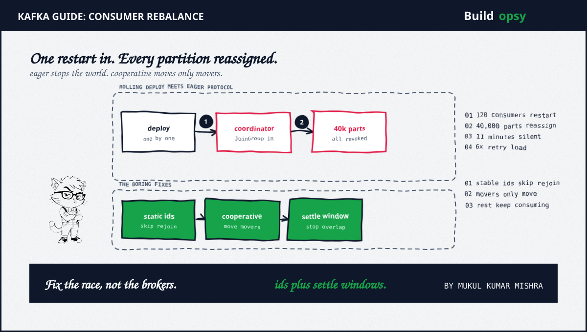

1. What a Kafka Rebalance Is in 60 Seconds
A consumer group splits partitions across its members. When membership changes, through a join, a crash, a deploy restart or a subscription edit, the group must reassign partitions. The triggering member sends JoinGroup. The coordinator computes a new assignment. Members revoke, re-fetch positions plus resume. Under the classic eager protocol, every member revokes everything first, so consumption stops group-wide for the window.
At small scale the window lasts seconds and nobody notices. At 120 members sharing 40,000 partitions, assignment math plus position refetching stretch the window into minutes. That duration is the entire story. Everything below is what happens when the window outlasts the trigger interval.
2. Why Rolling Deploys Cascade
Roll one restart at a time across 120 consumers and each restart rejoins the group. Each rejoin triggers a full eager rebalance. Each rebalance takes long enough at 40,000 partitions that the next restart lands mid-rebalance. The timer resets before completion, over and over, for a modeled 11 minutes. The safest rollout in the fleet becomes a continuous stall. Rolling deploys are sold as zero-downtime. Against eager rebalancing they are zero-uptime with extra steps.
Defaults conspire. A consumer stuck rebalancing past the poll interval looks dead, gets fenced out plus triggers another rebalance. Session timeouts tuned for crash detection fire during the very storm they should ride out. Then the fetch storm: 120 consumers resume at once from stale offsets, re-request the backlog plus breach poll intervals again. Recovery carries its own trigger.
3. The Retry Amplifier: 11 Minutes Becomes 6x
Upstream never waits. Eleven paused minutes at 60,000 events per second builds roughly 39.6 million events of backlog while downstream timeouts fire retries into topics consumers cannot yet drain. At 2 extra retries per stalled call with no backoff, recovery load lands near 6x normal before one new event arrives. Retries without jitter plus backoff are a self-inflicted DDoS with a deploy as the trigger.
Price your own retry policy with the retry-storm calculator before the incident instead of after. The full recovery math plus operator rules live in the deep postmortem.
4. Eager Versus Cooperative Rebalancing
Eager revokes all partitions from all members on every rebalance. Simple to reason about, catastrophic at scale. Cooperative assignment, from KIP-429, revokes only partitions that must move, so unaffected partitions keep consuming through the transition. The pause shrinks from group-wide to partial. The cascade loses the overlap it feeds on.
Static membership, from KIP-345, removes the trigger instead of softening the blow. Each consumer restarts under a stable instance id plus keeps its assignment. The rolling deploy becomes 120 uneventful restarts. For new deployments, track the next-generation consumer protocol from KIP-848, which moves coordination off the old broker-centric path.
| Approach | What changes | Effect |
|---|---|---|
| Static membership | Stable instance ids | Restarts skip rebalancing |
| Cooperative protocol | Incremental revocation | Pauses turn partial |
| Group-aware deploys | Settle windows plus caps | Triggers stop overlapping |
| Budgeted retries | Backoff plus jitter plus caps | Recovery stays near 1x |
5. What to Measure and Set
Alert on rebalance time, not just lag. Track join-sync duration, generations per hour plus assignment size, with pages that fire before the cascade locks in. Throughput plus broker health look idle or fine during a storm. Make deploys group-aware. Pause rollouts while a rebalance flies, stagger restarts with settle windows plus cap concurrent restarts as a fraction of group size. Budget retries like capacity. Backoff with jitter, per-dependency caps plus circuit breakers that open while lag is extreme. Revisit protocol defaults as partitions grow. Defaults are load-bearing architecture. Review them on the same schedule as capacity.
6. The Verdict: Boring Is the Fix
Nothing here is novel. That is the point. Stable instance ids. Incremental revocation. Settle windows. Backoff with jitter. Protocol-level alerts. Each fix is boring alone. Together they remove the trigger, soften the blow, separate the control planes plus price the recovery. The outage was three reasonable defaults composing at scale. The fix is five boring settings reviewed on the same schedule as capacity.
The pattern travels past Kafka. Every system has a coordination cost that grows with membership, a rollout strategy that ignores it plus a retry policy priced at calm-weather load. Find yours before Tuesday does.
7. Frequently Asked Questions
What triggers a Kafka consumer rebalance?
Membership changes: a consumer joins, leaves, crashes, or a subscription changes. Every JoinGroup triggers a rebalance so partitions can be reassigned across the group.
What is the difference between eager and cooperative rebalancing?
Eager revokes all partitions from every member on each rebalance, pausing the whole group. Cooperative revokes only partitions that must move, so unaffected partitions keep consuming through the transition.
How does static membership prevent rebalance storms?
Each consumer restarts under a stable instance id and keeps its assignment instead of rejoining as a stranger. Rolling deploys stop triggering full rebalances entirely.
Why do rolling deploys pause Kafka consumers?
Each restarted member rejoins the group. Under eager rebalancing every rejoin stops the world. Restarts arrive faster than rebalances complete, so the group never settles and consumption stalls.
Sources and Method
Protocol facts come from Apache Kafka documentation plus KIPs. Scenario numbers illustrate the labeled model from the companion teardown, not a claimed company incident. For the complete cascade analysis, see the full postmortem.